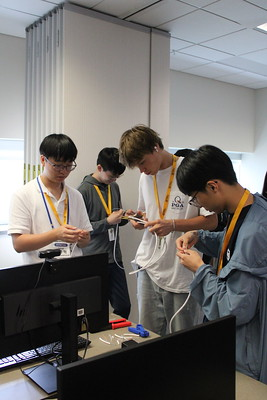
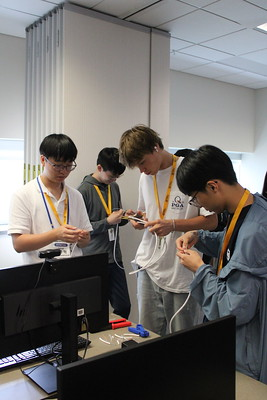

Projects
Welcome to my Portfolio!
Michigan Tech Summer Youth Program
One of two instructors for How to Build a Computer, Advanced How to Build a Computer, and Cybersecurity classes for the 2025 SYP program teaching high school students.
Advanced Building: Gaming Computer
Course Details:
"In this hands-on course, students will embark on an exciting journey to
build their own high-performance gaming computer. They will learn to configure the essential components in order to fin
e-tune a system that meets their needs. Through guided instruction and practical workshops, students will gain valuable skills
in assembling, troubleshooting and system tuning to get the most out of their new PC. By the end of the week, participants will have b
oth a powerful custom-built gaming PC and also a deep understanding of computer hardware plus the confidence to tackle future tech
projects. Students who have previously built a computer system will get the most out of this experience."
Build a Computer
Course Details:
"Hands-on learning! Campers will learn computer components and architecture by building a computer. You will start
from scratch from an empty case and end with a fully functioning computer while learning the purpose of each component. You will actually
take your computer (without the monitor) home, so be sure to leave room in your suitcase (approx. 2
cubic ft)! No prior experience required and students with enthusiasm and an interest in the topic will be successful in this course."
Cybersecurity
Course Details:
"Join us for a week-long exploration of cybersecurity. Throughout the week, you'll engage in learning activities designed to introduce students to a range of cybersecurity topics. We will start with cybersecurity on small systems (Arduino or Raspberry Pi) and scale up to larger systems requirements. We aim to make each workshop interesting and interactive. Campers will learn personal best practices for protecting their data and investigate ways in which bad actors can access information. Campers will work in groups in a computer lab environment and a classroom. Students with enthusiasm and interest in the topic will be successful in this course."
 

Undergraduate Research on the Michigan State Expungment model.
During my time as an Undergrad at Michigan Tech, I worked with Dr. Charles Wallace to help develop and test a scalable model for understanding record expungement of applicable marks for employment history in the State of Michigan. Prior to this, non-violent offenders would have to pay a route fee to have their case evaluated for elligibility. In 2020, the State of Michigan decided this would become an automatic process, however no details were released besidesa a short youtube video explaining the new model. This research aimed to create a more accessible model for expungement so people could understand why their application were being rejected and why.